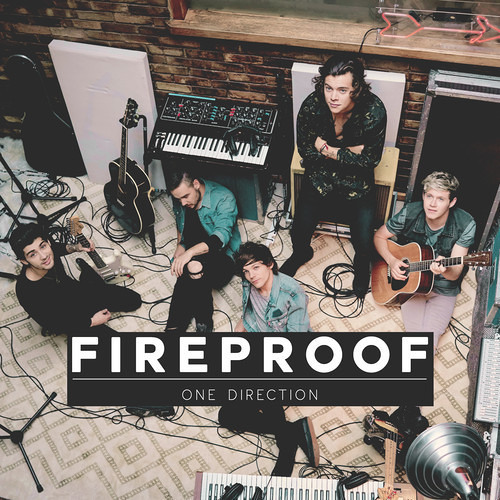
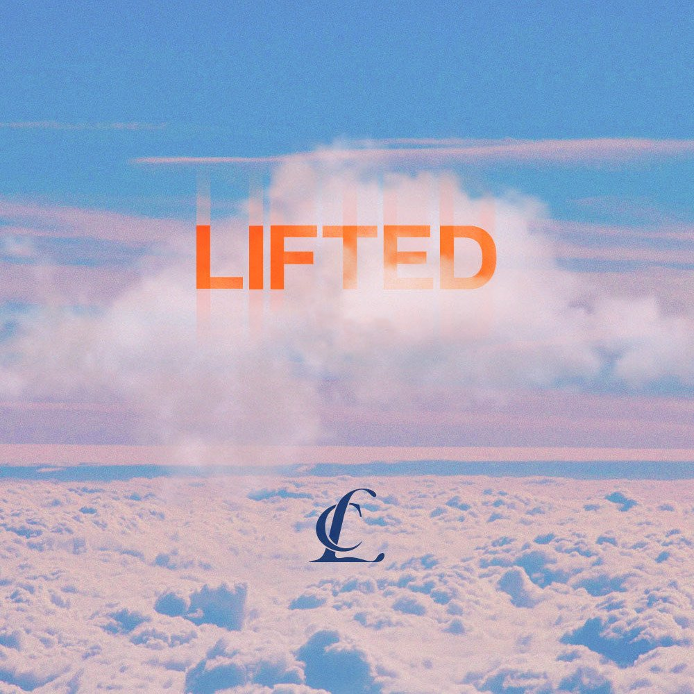
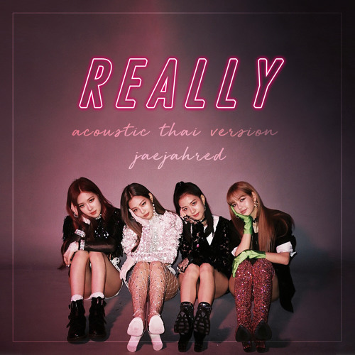
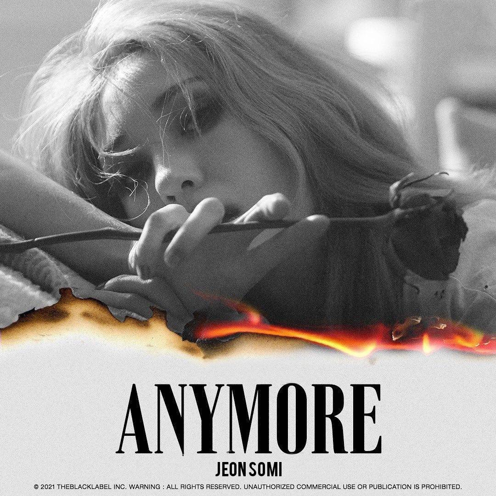

My Top 10 Favorite Songs
Top 1: Fireproof
Fireproof is a song by One Direction. It's about a relationship that despite all the stuggles that both of them face they always try to make a way to get though the hard times.
Top 2: Lifted
Lifted is the debut American single song of CL.This song is about smoking weed and getting high. Forgetting about all the problems and just focus on having fun since we only live once We dont wait for memories to come, we make our own memories.
Top 3: Really
Really is a song by South Korean girl group BLACKPINK. This song is about telling someone that if you love me then tell me, since I am not a magician to read your mind. Tell me straight forward what you feel to avoid regrets in the end.
Top 4: Anymore
Anymore is a song by SOMI under YG entertainment. This song is about a broken relationship on how love turned into vain. SOMI is reminding the guy about his wrong doings and if ever SOMI crosses his mind.
Top 5: An art Gallery Could Never Be As Unique As You

An art Gallery Could Never Be As Unique As You is a debut song of MRLD. It talks about how they went in an art gallery museum but MRLD is more focused on her lover. She's portraying how unique of an art her lover is.
Top 6: Closure
Closure is a song by Hayd. This is about a failed relationship that full of sadness, regrets and what ifs. What if I didn't messed up? What if I fought harder? but it's too late now.
Top 7: Come Back Home

Come back home is 2NE1's comeback song after a long haitus. It's about begging someone to come back after being left behind. Sadness, depression, and everything all in one after a breakup.
Top 8: Is This The Love That I Need

Is This The Love That I Need is the most famous song of the band FLU. It's about asking what is love? is love about romance? or good times? This song is about measuring love over pleasure.
Top 9: Repeat Util Death

Repeat until Death is a song made by Novo Armor. This is about loving someone but then losing them helplessly since that is the nature of Love. That is the nature of people. They come and they go.
Top 10: Safe and Sound

Safe and Sound is one of the soundtrack of The Hunger Games made by Taylor Swift. It is about 2 people fighting for something. The one is scared and the other one is cheering him up and saying he is going to be alright and they will be safe and sound.